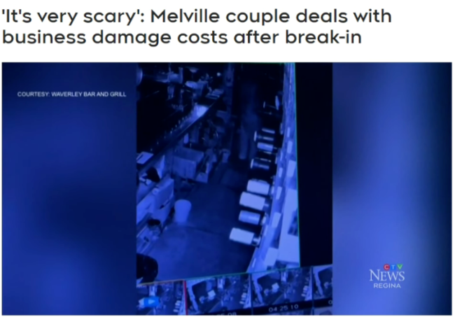
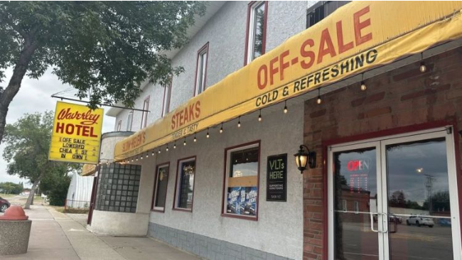

7月31日凌晨约4:15，Melville皇家骑警（RCMP）接到报告称，Waverley Bar and Grill发生了入室盗窃事件。

图源：ctvnews
虽然没有人员受伤，但几扇窗户和门被损坏，其中一位合伙人的汽车四个轮胎都被划破了。
“这真的很吓人，”合伙人Alin Cui表示。
Cui和她的丈夫几个月前接手了这个小生意。他们与另外三名长期租客一起住在现场，这些租客在事件发生时也在场。

图源：ctvnews
“我来Melville才七个月。我非常喜欢Melville，这里的人也很友好，但我不知道为什么会发生这样的事，”Cui补充道。
除了修理费用接近5,000元外，Cui表示她现在害怕让餐厅在深夜营业。
“每晚都很害怕。我和丈夫说，我总担心警报不会响，”她说。
图源：ctvnews
一名在酒吧住了多年的租客表示，他从未经历过这样的事情。
“我有点震惊，因为我以前从未见过这种情况，”Andy Pryhitka对CTV新闻说。
图源：ctvnews
“我希望这种事不会再发生，我不敢想象，但这确实很令人不安。”
自此事件发生后，Melville皇家骑警逮捕了一名未成年男孩，由于《青少年刑事司法法》而无法透露姓名的男性青少年。
因此，他面临四项指控：两项意图入室盗窃，两项价值5,000元以下的恶意破坏，以及一项未遵守释放令条件的指控。
这名少年定于9月16日在Melville出庭。
随着调查的继续，皇家骑警呼吁任何有相关信息的人立即与他们联系。
Advertisements